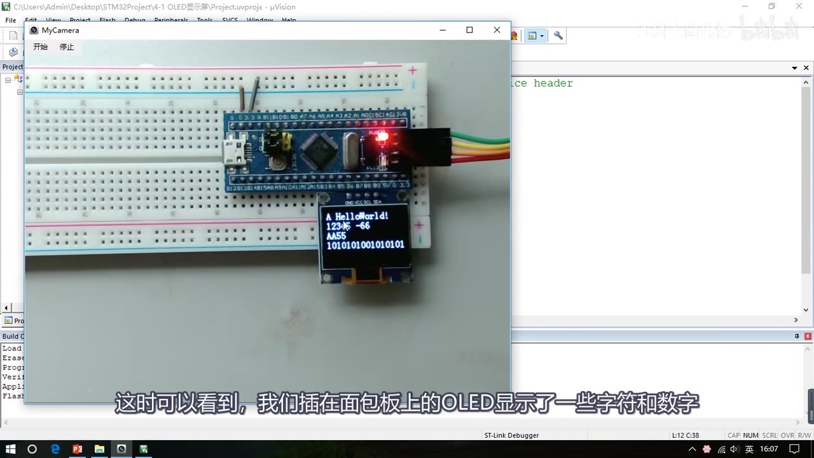
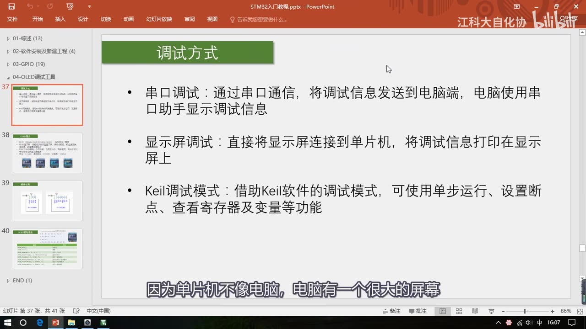
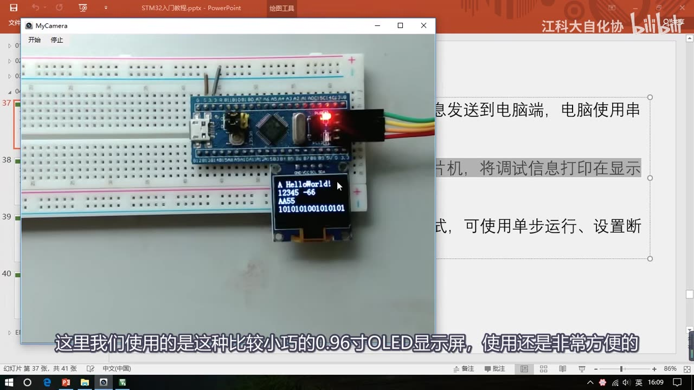
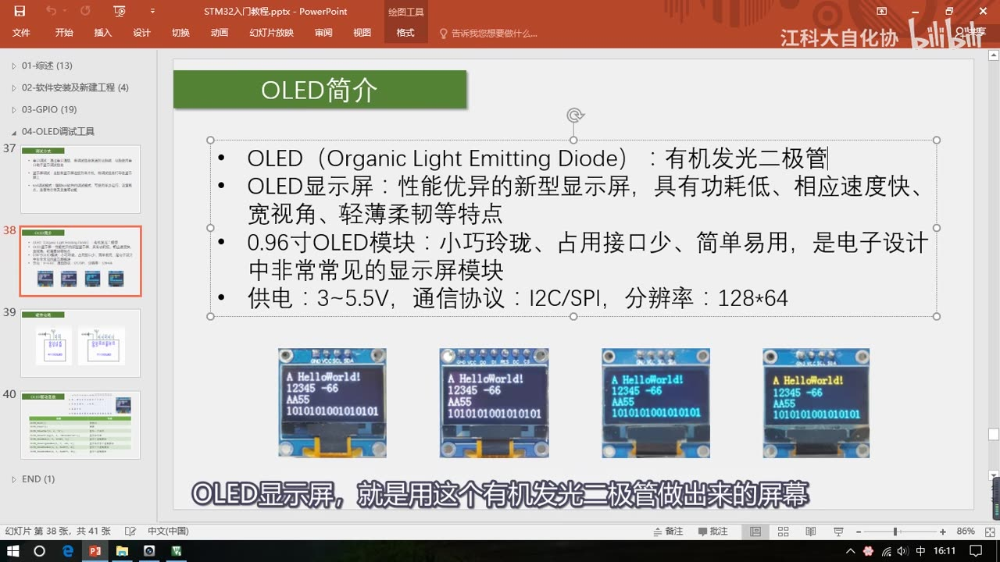
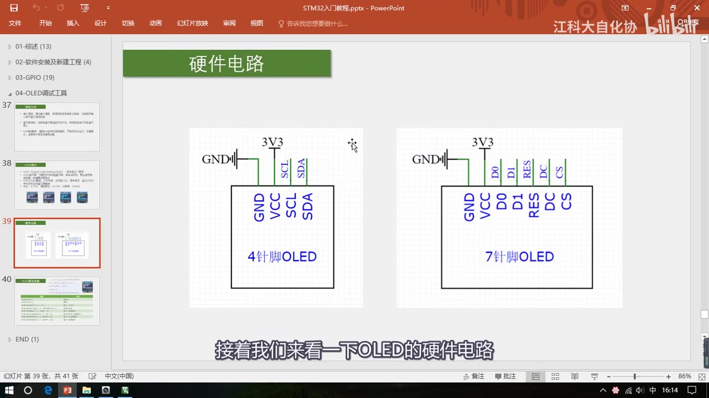
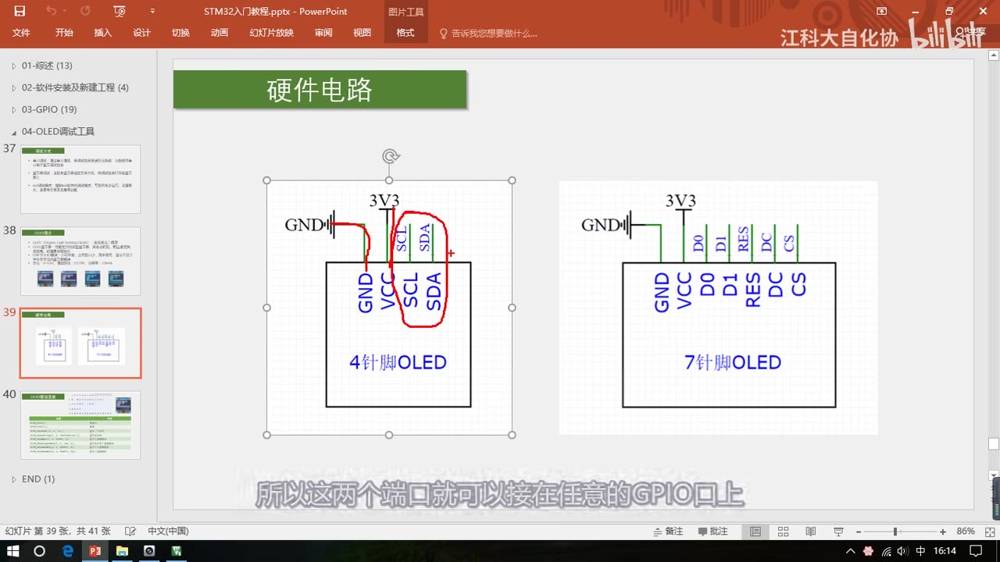
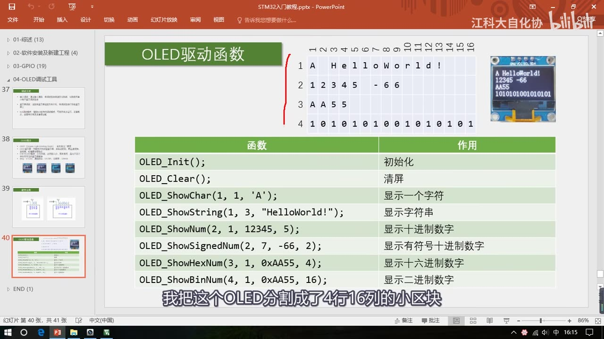
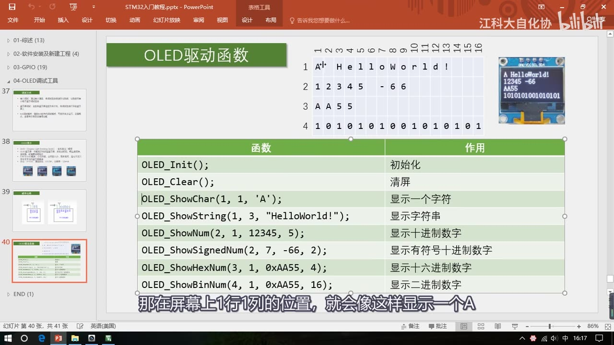

[4-1] OLED调试工具 — 学习笔记
- 课程：江协科技《STM32入门教程-2023版 细致讲解 中文字幕》
- 视频：BV1th411z7sn?p=9，14:00
- 素材：210 帧关键帧（每 4 秒，宽 1280px）+ PP-OCRv4 画面硬字幕 OCR（181 段）；关键截图 8 张随笔记收录（源图在
vidsum_out/stm32_p9/frames/，站内图片在assets/images/stm32-09/） - 字幕情况：该集 B 站没有 CC/AI 字幕，文本由画面烧录的中文字幕 OCR 得到（source=subtitle-ocr），偶有错字已按画面校正。
一句话结论
这一集很短、也很关键：它解决“单片机没有屏幕，程序怎么调试”的问题——对比串口调试、显示屏调试、Keil 调试三种方式，选择用 0.96 寸 OLED 当调试屏；本课不写驱动，直接使用作者提供的驱动函数模块（8 个显示函数），下一集 [4-2] 再用它写代码显示内容。
0. 本集程序的现象
只有一个程序（4-1 OLED显示屏），下载后插在面包板上的 OLED 显示：
- 第 1 行：字符 A、字符串 HelloWorld!
- 第 2 行：数字 12345、有符号数字 -66
- 第 3 行：十六进制 AA55
- 第 4 行：二进制 1010101001010101（就是 0xAA55 的二进制）
这些就是驱动模块能显示的内容，用来调试程序足够了。

图 1：OLED 现象——屏幕上显示字符 A、HelloWorld!、12345、-66、AA55 和二进制数
1. 为什么需要“调试工具”
- 单片机编程最大的问题之一是程序调试：电脑有大屏幕，想看什么变量直接打印到屏幕就行（
printf）；单片机受成本和电路结构限制，通常没有大屏，调试很困难。 - 本集列举 3 种常用调试方式：
| 方式 | 做法 | 优点 | 缺点 |
|---|---|---|---|
| 串口调试 | 通过串口把调试信息发到电脑，电脑用串口助手显示 | 借用电脑强大的软件界面，可显示曲线/图形，可做交互界面 | 调试时要拖着电脑；串口助手一般只能一行行信息流刷屏 |
| 显示屏调试 | 直接把显示屏接到单片机，把调试信息打印在屏上 | 对不断变化的数据可以覆盖刷新；屏可以一直接在板子上；可直接当产品的人机界面 | 屏幕小、显示内容有限 |
| Keil 调试模式 | 用 Keil 的调试功能：单步运行、设置断点、查看寄存器和变量等 | 功能非常强大，不用额外硬件 | 视频未展开缺点，下一小节专门演示（笔记补充：需要连接调试器、操作偏复杂） |
- 其他土办法：点灯调试法（程序执行到某处就点灯）、注释调试法（把新加代码注释掉、逐行恢复来定位问题）、对照法（拿一个能跑的程序，逐步替换成自己的逻辑来定位错误）。
- 本课程大多只是显示一些参数变量，所以作者选择 OLED 显示屏调试（更直观、更方便）。

图 2：三种常用调试方式——串口调试、显示屏调试、Keil 调试模式

图 3：0.96 寸 OLED 模块实物——插在面包板上，四针 I2C 接口
2. OLED 介绍
- OLED = Organic Light Emitting Diode，有机发光二极管；OLED 显示屏就是用有机发光二极管做出来的屏幕，是一种性能优异的新型显示屏。
- 优点：
- 功耗低：每个像素都是单独的发光二极管、能自发光，不像 LCD 需要背光，所以省电；
- 响应速度快：可做到更高刷新率、总线时序快，不易阻塞程序；
- 宽视角：任何角度看显示内容都清晰（对比 LCD 斜看会变黑）；
- 轻薄柔韧：手机折叠屏、柔性屏用的就是 OLED。
- 缺点：一般只有单色、分辨率较低。
- 本集用 0.96 寸 OLED 模块：小巧、占用接口少、简单易用，是电子设计中非常常见的显示屏模块。
- 模块规格：
- 4 针（白色像素，I2C 协议）/ 7 针（SPI 协议，占用 IO 更多）；
- 像素颜色有白色、蓝色、黄蓝双色（黄蓝双色不是真双色：上面 1/4 固定黄色、下面 3/4 固定蓝色，适合“标题 + 内容”界面）；无论什么颜色，驱动方式都一样；
- 供电 3～5.5V（3.3V 和 5V 单片机都兼容）；
- 分辨率 128×64。

图 4：OLED 简介——有机发光二极管、功耗低/响应快/宽视角/轻薄柔韧、0.96 寸模块参数
3. 硬件电路与接线
- 4 针版本（本课使用）：GND → GND、VCC → 3.3V 供电；SCL、SDA 是 I2C 通信引脚。
- 7 针版本：GND/VCC 供电，其余是 SPI 引脚（D0/D1/RES/DC/CS）。
- 关键点：作者提供的驱动模块是用 GPIO 模拟 I2C/SPI 的，所以 SCL、SDA 可以接在任意 GPIO 口上（不要求接硬件 I2C 引脚）。
- 后续 [4-2] 写代码时，会用两个普通 GPIO 模拟 I2C 来驱动 OLED（具体引脚见下一集）。

图 5：OLED 硬件电路——左：4 针 I2C（GND/VCC/SCL/SDA）；右：7 针 SPI

图 6：SCL/SDA 可接任意 GPIO——因为驱动模块用 GPIO 模拟 I2C 通信
4. 驱动函数模块（本集重点：会用这些函数）
- 屏幕坐标：把 128×64 的屏分成 4 行 × 16 列的小区块；从左上开始，向下依次是第 1～4 行，向右依次是第 1～16 列。显示函数的“行、列”参数就是指定从这个小区块开始显示。
| 函数 | 作用 | 参数说明 |
|---|---|---|
OLED_Init() |
初始化 | 使用 OLED 前必须调用 |
OLED_Clear() |
清屏 | 调用后屏幕清空 |
OLED_ShowChar(行, 列, 字符) |
显示一个字符 | 如 OLED_ShowChar(1, 1, 'A') 在第 1 行第 1 列显示 A |
OLED_ShowString(行, 列, 字符串) |
显示字符串 | 如 OLED_ShowString(1, 3, "HelloWorld!") |
OLED_ShowNum(行, 列, 数字, 长度) |
显示无符号十进制数字 | 如 OLED_ShowNum(2, 1, 12345, 5) |
OLED_ShowSignedNum(行, 列, 数字, 长度) |
显示有符号十进制数字（带正负号） | 如 OLED_ShowSignedNum(2, 7, -66, 2) |
OLED_ShowHexNum(行, 列, 数字, 长度) |
显示十六进制数字 | 如 OLED_ShowHexNum(3, 1, 0xAA55, 4) |
OLED_ShowBinNum(行, 列, 数字, 长度) |
显示二进制数字 | 如 OLED_ShowBinNum(4, 1, 0xAA55, 16) |
- 本集只要求会用这个驱动模块；原理和代码编写以后单独讲。
- 驱动模块暂时没有加入中文和图像显示（调试用不到），以后单独学 OLED 时再演示。

图 7：OLED 驱动函数表——8 个函数、参数示例，右上角是屏幕 4 行 16 列坐标图

图 8：OLED_ShowChar(1,1,'A') 示例——在屏幕第 1 行第 1 列显示字符 A
5. 坑与易错点
- 用 OLED 前必须先
OLED_Init()，否则屏幕不显示。 - 4 针是 I2C、7 针是 SPI，买模块/接线前先看清针脚数量。
- 驱动模块用 GPIO 模拟 I2C，SCL/SDA 接任意 GPIO 都可以；但要和代码里定义的引脚一致。
- VCC 接 3.3V（模块支持 3～5.5V，但本课程板子用 3.3V），GND 别接反。
- 行列从 1 开始数：4 行 × 16 列；字符串/数字的长度参数要按实际内容给够（视频只讲坐标和长度参数，未讲越界行为）。
- 黄蓝双色不是真双色：上 1/4 固定黄、下 3/4 固定蓝，做界面时按这个规律排版。
- 屏幕只能单色、分辨率 128×64，显示内容有限，别指望显示复杂图形。
- 本集只演示现象、不写代码；代码在下一集 [4-2]。
时间轴
| 时间 | 内容 |
|---|---|
| 0:00 | 开场：本课学 OLED 调试工具，先学会用提供的驱动模块 |
| 0:41 | 现象：OLED 显示字符 A、HelloWorld!、12345、-66、AA55、二进制 |
| 1:53 | 为什么要调试：单片机没有大屏，3 种常用调试方式 |
| 2:53 | 串口调试方式说明（发到电脑、串口助手显示） |
| 3:57 | 显示屏调试方式说明（0.96 寸 OLED 直接接单片机） |
| 5:43 | Keil 调试模式，以及点灯法/注释法/对照法 |
| 7:19 | OLED 介绍：有机发光二极管、功耗低/响应快/宽视角/轻薄柔韧 |
| 9:11 | 0.96 寸模块规格：4 针/7 针、白色/蓝色/黄蓝双色 |
| 9:57 | 参数：供电 3～5.5V、I2C/SPI、分辨率 128×64 |
| 10:32 | 硬件电路：4 针 I2C（GND/VCC/SCL/SDA）/ 7 针 SPI |
| 11:20 | 驱动函数模块：屏幕坐标与 8 个函数 |
| 12:10 | 各显示函数的用法示例（ShowChar/ShowString/ShowNum…） |
| 13:28 | 中文/图像暂未加入，下一小节用它写代码 |
存疑
- 本集文本来自画面硬字幕的 OCR（PP-OCRv4，source=subtitle-ocr），不是 ASR；本集真实错字例子：目前→“自前”、打印→“打即”、缺点→“端”、串口→“事口”、比较→“北较”、I2C→“12C”、OLED→“O山D”，已按画面校正。
- 本集只演示现象、不写代码；OLED 驱动代码在下一集 [4-2] 讲。
- 驱动模块的中文/图像显示本课未包含，作者说以后单独讲 OLED 时再演示。
- “三种调试方式”的优缺点按视频原话整理；Keil 调试模式的具体操作在下一集演示。
- 模块价格/型号未在视频中给出，本笔记不涉及具体购买信息。